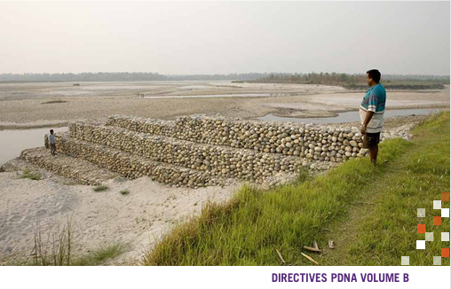
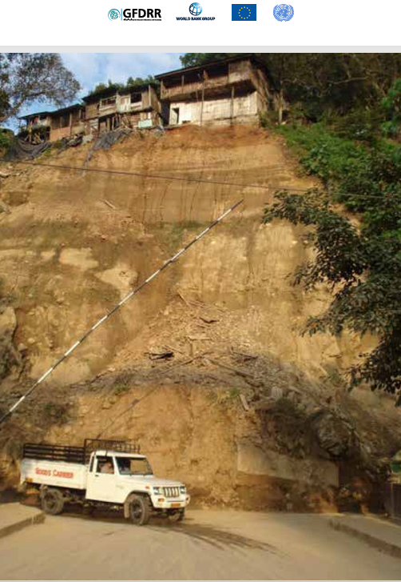

La secteur transversal concerne plusieurs domaines à la fois.
Parmi les secteurs transversaux les plus importants, On trouve l'environnement
, car il touche le santé, l'agriculture,le transport et le plusieurs autres domaines.
Ausi, la protection de l'environnement est devenue un responsabilité commune afin d'assures
un devevloppement durable
ENVIRONNEMENT


Table des matières
INTRODUCTIONS
PROCESSUS D'ÉVALUATION
VUE D'ENSEMBLE DU SECTEUR ET ÉTAT DES LIEUX AVANT LA CATASTROPHE
ÉVALUATION DES EFFETS D'UNE CATASTROPHE
ESTIMATION DE LA VALEUR DES EFFETS D'UNE CATASTROPHE
ÉVALUATION DE L'IMPACT D'UNE CATASTROPHE
LIENS INTERSECTORIELS ET THÈMES TRANSVERSAUX
STRATÉGIE DE RELÈVEMENT SECTORIELLE
INTRODUCTIONS
L'objectif principal de l'évaluation des besoins post-catastrophe en matière d'environnement est de préparer une
stratégie de relèvement qui guidera la remise en état de l'environnement et des ressources naturelles endom
magés par une catastrophe. Cette stratégie doit également favoriser une reconstruction respectueuse de l’envi
ronnement dans tous les secteurs. Enfin, le plan de relèvement encourage la remise en état de l'environnement
et des ressources naturelles en tant que stratégie de réduction des risques de catastrophe.
PROCESSUS D'EVALUATION
L'environnement concerne l'ensemble des secteurs d'activité économique et sociale. La stratégie employée dans
ces Lignes directrices consiste par conséquent à prendre uniquement en compte les aspects des effets et des
impacts post-catastrophe qui ne sont pas abordés dans les autres sous-secteurs.
En raison de la nature transversale de l'environnement, l'équipe d'évaluation1 doit œuvrer en étroite collaboration
avec les autres équipes sectorielles, mais aussi participer si possible aux principales consultations (ou en tirer des
enseignements). La coordination avec les autres équipes sectorielles est également importante pour éviter les
doubles comptabilisations lors du calcul des effets et des impacts.
Ces lignes directrices contribuent à la méthodologie d'évaluation post-catastrophe à différents titres: elles conso
lident l'estimation des besoins relatifs au relèvement du développement humain, à la gouvernance et aux ca
pacités institutionnelles, à la réduction des risques de catastrophe pour ce qui touche à l’environnement et aux
problèmes d'accès consécutifs à une catastrophe.
Une fois que la décision a été prise de réaliser une évaluation des besoins post-catastrophe (PDnA) pour le sec
teur de l'environnement dans un pays donné, il convient tout d'abord d'en délimiter la portée. Dans le scénario
de base, cet exercice est à réaliser dans le pays concerné après l'évaluation préliminaire des données disponibles
sur la catastrophe.
Les informations suivantes doivent être recueillies:
type de catastrophe, intensité et périmètre géographique
Populations touchées par la catastrophe, ventilées par âge et par sexe dans chaque subdivision territo
riale (provinces, districts, etc.)
Principaux secteurs de l'environnement touchés et services qu'ils fournissent habituellement
Principales institutions (nationales, locales) participant à la gouvernance de l'environnement
Principales parties prenantes participant aux opérations de secours
Portée générale et calendrier de l'évaluation
Sources possibles des données requises
Dans le cas de catastrophes majeures, il est utile que le chef d'équipe ait visité au moins une fois les lieux lors d’un
voyage de reconnaissance avant de valider le périmètre d'action. il ou elle pourra ainsi présenter aux membres
de l'équipe la situation générale. Des supports visuels tels que des photographies doivent être prévus pour aider
les équipes à se préparer. Ce sont également d'excellentes sources de références complémentaires qui doivent, si
possible, être accompagnées de métadonnées. Les cartes seront consultées et annotées en tant que de besoin.
COLLECTE DES DONNEES SUR LE TERRAIN
Le travail de terrain doit se décomposer en quatre éléments:
Collecte d'informations sur le terrain
Évaluation des capacités institutionnelles
Consultation des parties prenantes, en veillant à représenter équitablement les différents sous-groupes
de la population tels que les jeunes, les hommes, les femmes, les groupes ethniques, etc.
Échanges avec les autres équipes sectorielles travaillant sur le terrain, afin de trianguler les informations
et d'éviter les répétitions.
À partir des informations obtenues par l'analyse préalable à la catastrophe (décrite dans la partie suivante) et de
ce que l'on sait déjà sur l'ampleur et l'étendue de la catastrophe, il faut tenter de cartographier la situation afin
de répertorier les zones à risques (communautés spécifiques, écosystèmes vulnérables, etc.) et de commencer à
déterminer les dangers éventuels dans chacune d'elles. il est notamment possible de:
obtenir ou créer une carte de base de la région à partir des informations disponibles, des images satel
litaires, des connaissances locales, etc.;
repérer les endroits où la catastrophe a eu le plus d'impact, en notant également les changements per
tinents affectant les infrastructures, les logements, etc.;
indiquer les zones pouvant présenter des risques accrus (à la suite d'impacts secondaires induits par la
catastrophe, ou parce qu'elles peuvent pâtir de l'exploitation non durable des ressources naturelles);
identifier les mesures éventuellement nécessaires (et les instances à consulter) afin de contribuer à atté
nuer l'impact sur l'environnement;
recenser les institutions et les acteurs principaux qui sont touchés et/ou qui doivent être consultés;
recenser les services types fournis par l'environnement.
COLLECTE DES DONNEES
Sources de données existantes: la collecte des données est toujours difficile, en particulier aussitôt après une
catastrophe, lorsque les personnes compétentes ont d'autres obligations urgentes. Les équipes d'évaluation
doivent en être conscientes et travailler de manière stratégique, afin de maximiser le partage des données entre
équipes sectorielles. Elles doivent également se préparer à travailler avec les données disponibles (potentielle
ment imprécises et incomplètes) et à combler les lacunes par le biais de collectes de données primaires, d'obser
vations à distance et d'avis d'experts.
voici une procédure possible pour collecter des données primaires:
Préparer un plan ainsi qu'un guide pour les études de terrain des zones sinistrées et, si possible, des zones
non touchées et/ou intactes
Établir un plan pour les entretiens personnels (voir l'étape suivante) en coordination avec les interlocu
teurs nationaux compétents
rencontrer les personnes occupant des postes à responsabilité, les spécialistes techniques désignés et
toutes autres personnes informées et responsables ou en possession d'informations pertinentes
Procéder aux entretiens sur le terrain avec des chercheurs universitaires, des fonctionnaires, des représen
tants des autorités et des responsables communautaires, en parallèle d'une évaluation des autres études
sur place ou des analyses existantes
Rencontrer les organisations locales à base communautaire, les femmes, les hommes, les communautés
autochtones le cas échéant, susceptibles de connaître les zones sinistrées ainsi que les effets qui en ré
sultent sur les moyens de subsistance de la population
À partir des informations disponibles sur la nature de la catastrophe et des données primaires recueillies, chaque
spécialiste de l'équipe d'évaluation peut préparer une liste des informations utiles souhaitées en vue de l'anal
yse détaillée des effets, mais aussi de la détermination des besoins. il est alors possible d'établir les sources de
données secondaires potentielles. il faudra notamment effectuer des recherches dans les sources d'information
génériques suivantes:
Données publiques et confidentielles des nations Unies et d'autres organismes internationaux, y compris
d'autres évaluations de la catastrophe
informations disponibles auprès des administrations des gouvernements nationaux
informations disponibles auprès des onG internationales et locales
informations disponibles dans les documents généraux publiés
Consultation des représentants d'autres organismes des nations Unies et des autorités nationales ou
régionales
informations recueillies (et enquêtes réalisées) par d'autres organismes des nations Unies ou nationaux
dans ce contexte particulier, après la catastrophe (d'autres évaluations post-catastrophe ont vraisembla
blement été réalisées dans la région avant celle de l'équipe d'évaluation)
Consultation de la population touchée (certaines parties peuvent prendre la forme d'enquêtes auprès
des habitants)
De nombreuses sources d'information disponibles auprès des autorités nationales ou régionales du pays sinistré
peuvent être utiles à l'évaluation des besoins en matière d'environnement.
EFFETS SUR LES RISQUES ET LES VULNERABILITES
Les catastrophes ne sont pas uniquement préjudiciables à l'environnement, dont la dégradation entraîne une ag
gravation des effets des phénomènes naturels. il est donc important de recenser les facteurs environnementaux
des risques de catastrophe, dont le tableau 1 donne quelques exemples.
Tableau 1: Facteurs environnementaux des catastrophes
Facteur Environnemental
Type de Catastrophe Provoquée ou Amplifiée
Déforestation
Glissements de terrain, inondations éclair, sécheresses et désertification
Dégradation des récifs coralliens
ondes de tempête
Conversion des terres humides
inondations
monoculture forestière
Feux de forêt
Dégradation des mangroves
inondations, ondes de tempête, érosion côtière
Dégradation de l'herbier marin
Érosion des plages
outre les facteurs environnementaux traditionnels, les changements climatiques risquent eux aussi d'augmenter
la fréquence et la gravité des phénomènes météorologiques dangereux (ouragans, inondations, sécheresses). Les
catastrophes et leurs conséquences environnementales peuvent accroître les risques de nouvelles catastrophes.
Les feux de forêt peuvent augmenter les risques de glissements de terrain; les tempêtes de sable, ceux de dom
mages associés aux sécheresses; et la dégradation des mangroves à la suite de phénomènes côtiers, les risques
d'érosion du littoral
ESTIMATION QUANTITATIVE
Une fois que les effets sur l'environnement ont été identifiés et classés dans la catégorie pertinente, l’étape
suivante consiste à les quantifier et à les évaluer. C'est la partie la plus difficile de l'évaluation, essentiellement à
cause des contraintes de temps et de la difficulté d'obtenir des informations de qualité.
Le processus de quantification établit l'ampleur des dégâts dans les zones sinistrées: superficie de forêts brûlées
ou de sols érodés, longueur des plages abîmées, réduction du volume des pêches, diminution du débit d'eau,
présence de polluants dans l'eau, nombre de représentants d'une espèce tués, etc.
Les données géospatiales, en particulier les images satellitaires avant et après la catastrophe, peuvent être très
utiles à ce stade. Les enquêtes de reconnaissance et le travail de terrain réalisés après la catastrophe, ainsi que
la comparaison des images ressortant de ces enquêtes avec les données de référence recueillies lors de l’étude
théorique, peuvent également être utiles. La consultation de représentants des collectivités territoriales ou des
membres des équipes de secours peut également apporter des éléments pertinents sur l'étendue des dom
mages.
La quantification est très souvent impossible. Les délais accordés peuvent ne pas suffire pour obtenir des infor
mations quantitatives sur les effets subis par certaines espèces. Seule une description qualitative sera envisa
geable, même si les effets peuvent être identifiés et maintenus. Par exemple, en ce qui concerne la faune, il est
presque toujours impossible de déterminer le nombre d'individus touchés. Seul l'effet sur l'environnement pourra
alors être déterminé.
Comme on l'a vu, il est important de songer que certaines conséquences de la catastrophe pourront se ma
nifester après l'évaluation. Par exemple, les moyens de subsistance primaires ayant (momentanément) disparu,
les ressources forestières pourront s'épuiser rapidement lorsque les communautés chercheront d'autres sources
d'énergie et d'autres moyens de subsistance
ESTIMATION DE LA VALEURS DES EFFETS D'UNE CATASTROPHE
Cette sectio fournit des recommandations sur les méthodes
d'estimation de la valeur des dommages et des
variations des flux économiques, établie à partir des éléments qui,
dans la partie consacrée aux effets, ont eu
des répercussions financières. Il peut s'agir des dommages
subis par les biens ou des pertes provoquées par les
variations des flux financiers en lien avec les services/la production,
la gouvernance et les risque
ÉVALUATION ECONOMIQUE
Il est généralement difficile de déterminer la valeur économique des biens environnementaux.
Toutefois, les secteurs participant à l'évaluation des besoins post-catastrophe
étant censés présenter des estimations financières,
le secteur Environnement doit lui aussi procéder à l'évaluation
économique des dommages et des variations des
flux. Il s'agit d'un processus complexe pour lequel il existe différentes
techniques d'évaluation. Le tableau 2 en
présente les grandes lignes.
Tableau 2: Méthodes d'évaluation des services environnementaux/écosystémiques types
Services environnementaux/écosystémiques
Méthodes d'évaluation
Valeur marchande
Effets sur la productivité
Coût du déplacement
Prix hédonique
Évaluation contingente
Approvisionnement
x
x
Régulation
x
x
Appui
x
Culturels
x
x
x
Il est important de préciser ici que lorsque les catastrophes causent du tort aux écosystèmes,
leurs services d'approvisionnement ne sont pas les seuls à être compromis;
les autres services écosystémiques sont également touchés.
L'évaluation économique de ces services fait l'objet
de recherches de plus en plus nombreuses. Le présent
document n'a pas vocation à présenter en détail la méthodologie de quantification
de toutes les valeurs décrites dans les parties précédentes.
Plusieurs méthodes de quantification sont toutefois proposées ici.
Dans la plupart des situations, compte tenu du niveau de données disponibles après
une catastrophe et du
temps et des ressources dont on dispose pour collecter de nouvelles données,
il n'est pas toujours facile de quantifier la valeur économique de ces perturbations.
Dans certains cas, il sera possible d'utiliser d'autres données sur
les coûts, produites dans un contexte économique ou environnemental comparable.
Cependant, il est important que les services écosystémiques non quantifiés apparaissent dans le rapport
si l'on veut que la stratégie de relèvement les prenne en compte à leur juste mesure
REFERENCES
Programme des Nations Unies pour l'environnement (PNUE) et Groupe de travail
thématique du Comité permanent interorganisations sur le relèvement accéléré, 2008,
Environmental Needs Assessments in Post-Disaster Settings, PNUE.
Commission économique des Nations Unies pour l'Amérique latine et
les Caraïbes (CEPALC), 2003, Manuel
pratique d'évaluation des effets socio-économiques des catastrophes,
CEPALC et Banque interaméricaine de
développement, Washington.